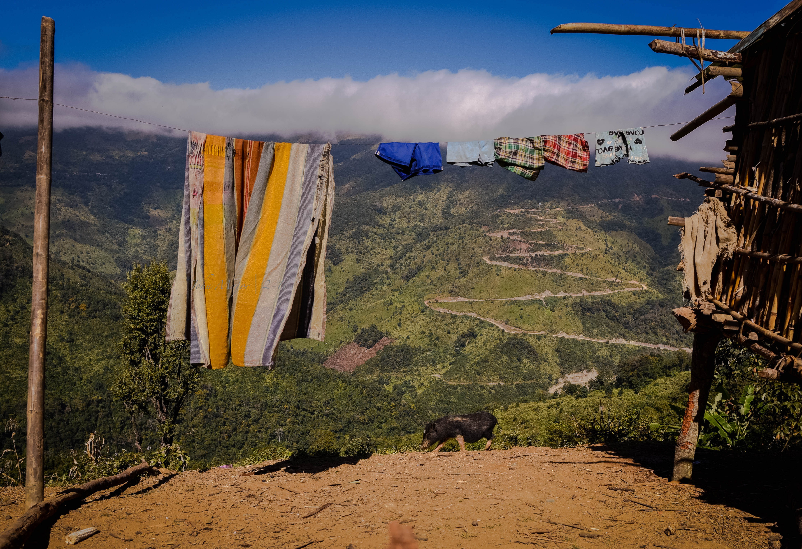
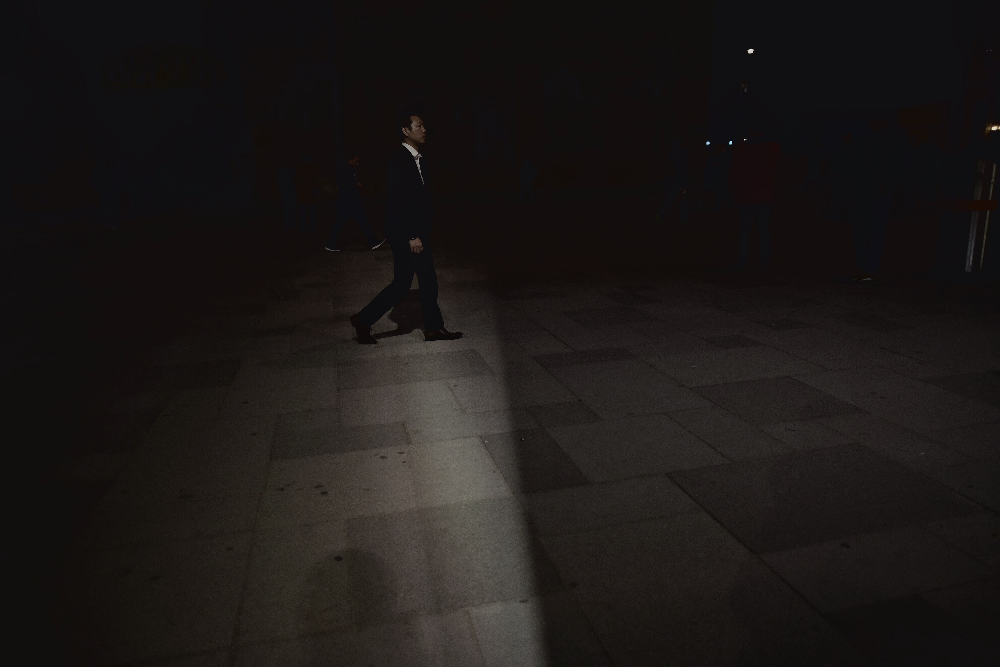
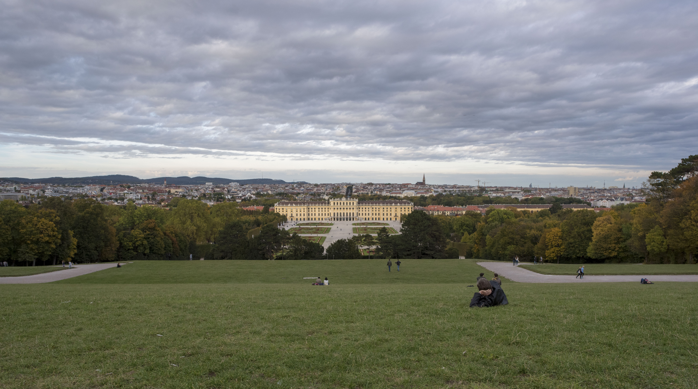
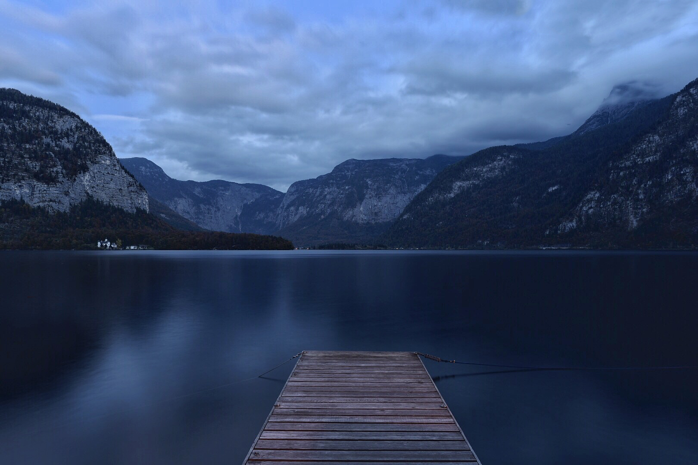
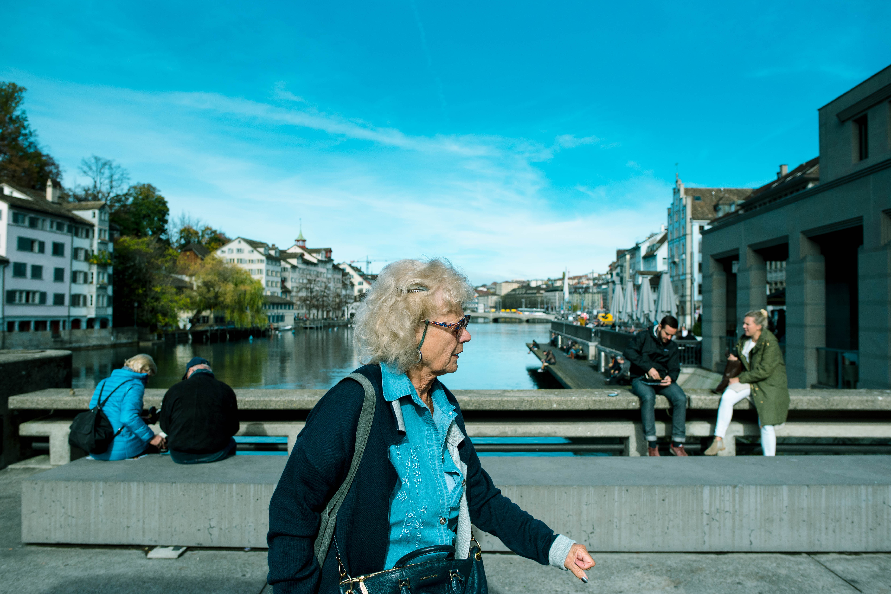

ခရီးသွားသော ၂၀၁၇
၂၀၁၆ ဒီဇင်ဘာလောက်ကနေ ၂၀၁၇ တနှစ်လုံး ခရီးတွေ အတော်များများသွားဖြစ်တယ်။ ဒီအသက်အရွယ်ထိ ဘဝမှာ ခရီးအသွားအဖြစ်ဆုံးကာလ လို့ပြောလို့ရမယ်။ တခါတလေကျတော့လည်း တချို့အရာတွေက မမျှော်လင့်ထားပဲ ဖြစ်တတ်သား။ ခရီးသွားတယ်ဆိုတာ ငယ်ငယ်တုန်းက အိပ်မက်တခုမဟုတ်ခဲ့တော့ ကိုယ့်အတွက်အိပ်မက်ထားတဲ့နေရာရောက်ခဲ့တယ်ရယ် သွားချင်ခဲ့တယ်ဆိုပြီး မဖြစ်မိသေးဘူး။ ဒါပေမယ့် အရမ်းကို မသွားမဖြစ်သွားကိုသွားမယ်ဆိုတဲ့စိတ်ကူးထဲကနေရာကတော့ မန်ယူနိုက်တက်ရဲ့ အိပ်မက်ကဇာတ်ရုံလို့ခေါ်တဲ့ ဘောလုံးကွင်းပဲ။ ဘယ်တော့လဲမသိပေမယ့် မသေခင်ရောက်ဖူးချင်တာတော့အမှန်ပဲ။ စစချင်းခရီးတွေထွက်တော့ ဓါတ်ပုံကောင်းကောင်းတွေ၊ သူများနဲ့ မတူတဲ့ အတွေ့အကြုံတွေ အရမ်းရချင်မိတာ။ နောက်မှ တဖြေးဖြေးပြောင်းလဲလာတာက ဓါတ်ပုံကောင်းကောင်းတွေ ဘာတွေထပ် ကိုယ်နေရာတခုကို ရောက်နေချိန်မှာ အဲဒီနေရာကို တကယ်ရောက်ဖို့လိုတယ်ဆိုတာ သဘောပေါက်လာတယ်။
တခါတလေ ဓါတ်ပုံထပ် မျက်လုံးနဲ့ကြည့်တာက ပိုလှနေတတ်တဲ့ အခိုက်အတန့်တွေ၊ အသံတွေ၊ ရာသီဥတု၊ ပတ်ဝန်းကျင် အနေအထားတွေ စတာတွေ ပြန်တွေးတိုင်းသတိရနေဖို့ ကိုယ်ကိုတိုင် အဲဒီအခိုက်အတန့်မှာ တကယ်ရှိနေ တကယ်ခံစားမိဖို့ကိုပဲ ပိုဦးစားပေးမိတော့တယ်။ ဒါက ကိုယ်ခရီးသွားရင် လိုချင်မိတဲ့ အရာပေါ့၊ လိုချင်တာတွေ အမြဲတမ်းတော့လည်း ဘယ်ရမလဲ။ ဒါကကိုယ်သွားခဲ့သမျှနေရာတွေထဲကမှ တကယ့်တကယ် ကိုယ့်စိတ်ထဲကို စွဲနေတဲ့ အခိုက်အတန့်တွေကို စာလေး ဓါတ်ပုံလေးနဲ့ ပြန်တွဲကြည့်ထားတာ...
(၁)
ဟိုးတဖက်က တောင်ကြောတလျှောက်မှာ မြွေလိမ်မြွေကောက်ဖောက်ထားတဲ့ လမ်းတွေကို မြင်နေရတဲ့ အခြားတဖက်မှာ ကိုယ့်ကိုကိုယ်ပြန်တွေ့ရတယ်၊ အဲဒီအချိန်တုန်းက ကော်ဖီတခွက် ဒါမှမဟုတ် ဆေးလိပ် တလိပ် သောက်ရင်း တိမ်တွေကိုကြည့်နေရရင် ပိုကောင်းမှာပဲလို့ တွေးမိတယ်။ မြင်နေရတဲ့ မြင်ကွင်းထဲ ကိုယ့်အတွေးတွေနဲ့ မှုတ်ထုတ်လိုက်တဲ့ ဆေးလိပ်ငွေ့တွေထည့်ပြီး အားဖြည့်ကြည့်ချင်တဲ့သဘောပေါ့၊ ဒါပေမယ့် အရောင်တွေခြယ်လိုက်မှ အလှပျက်သွားမှာလည်း စိုးမိတယ်။

(၂)
ကြယ်တွေကို ကိုယ်က ထိုင်ကြည့်နေတုန်းမှာ သူတို့ကရော ကိုယ့်ကိုကိုယ်ပြန်ကြည့်နေသလား တွေးကြည့်မိတယ်၊ အဖြေတော့မရပေမယ့် ဒီညအတွက် ကျေးဇူးတင်တဲ့အနေနဲ့ ချီးယားစ်ဆိုပြီး လက်ထဲက ဝီစကီကို မော့ချလိုက်မိတယ်၊ ဖန်ခွက်ချင်းတိုက်ခဲ့မိလား မမှတ်မိတော့။ အဲဒီညက တကယ်ကိုချမ်းပြီး ကြယ်တွေအတော်ကိုလင်းခဲ့ကြတာတော့မှတ်မိတယ်။

(၃)
ခရီးသွားတိုင်းရောက်လေရာမှာ နေထွက်ချိန်နဲ့နေဝင်ချိန်အမှီ အိပ်ယာထတတ်တဲ့ သူငယ်ချင်းတွေရှိတာလည်း ခရီးသွားရခြင်းရဲ့ရသတခုပေါ့၊ လူတိုင်း ခံစားတတ်စရာမလိုဘူး၊ နေထွက်ချိန်မှာ ကြွတက်လာမယ့် အရောင်တွေကို ရင်ခုန်တတ်တဲ့၊ နေဝင်တာကို လက်ခုပ်တီးအားပေးမယ့် လူနည်းနည်းပဲလိုတယ်။
(၄)
ကြယ်တွေအကြောင်းထပ်ပြောရင် ကြယ်တွေကို တောင်ပေါ်ကနေ နီးနီးကပ်ကပ်လည်း ကြည့်ဖူးတယ်၊ ရေစီးသံတွေ တညံညံကြားနေရတဲ့ မြစ်ပေါ်မှာ အိပ်ပြီးလည်းကြည့်ဖူးတယ်။ နေရာတွေ အချိန်တွေ မတူပေမယ့် ကြယ်တွေကတော့ အတူတူပဲ တောင်ပေါ်ကကြည့်လည်း လင်းနေတုန်းပဲ၊ မြစ်ပေါ်ကကြည့်လည်း ကြွေနေတုန်းပဲ။ ဆိုတော့ ကြယ်တွေက မပြောင်းလဲကြဘူးတဲ့လား?
(၅)
ငယ်ငယ်တုန်းက ထူးထူးဆန်းဆန်းတခုခုတွေ့ဖူးမြင်ဖူးပြီဆို နောက်ရက်တွေမှာ သူငယ်ချင်းတွေကြားမှာ ဘယ်လောက် အံ့သြစရာ ကောင်းကြောင်း ပြန်ပြောင်းပြောရတာလည်း အရသာတခုပဲ။ အဲဒီနေ့တုန်းကလည်း အဲဒီလိုမျိုးပဲ။ ဗီယင်နာကို ရောက်ရောက်ချင်း ငယ်ငယ်တုန်းက ဟယ်ရီပေါ်တာကားထဲက Hogwarts ကျောင်းကြီးကိုမြင်လိုက်ရသလို St. Stephen's Cathedral ရဲ့ကြီးကျယ်မှုဟာ ကိုယ့်ကိုချက်ချင်းဖမ်းစားနိုင်ခဲ့တယ်။ သူချည်းပဲလားဆိုတော့ ဗီယင်နာရဲ့မြို့လယ်ခေါင် Stephenplatz squrae ဟာလည်း ကမ္ဘာကျော်ဆိုင်တွေ၊ ဝတ်ကောင်းစားလှတွေ စမတ်ကျကျဝတ်ထားသူတွေနဲ့ ကိုယ့်အတွက်တော့ ဥရောပသမိုင်းရုပ်ရှင်ကားတကားကို ဘေးကနေလိုက်ကြည့်နေရသလိုမျိုးပဲ ခြေလှမ်းတလှမ်း လှမ်းလိုက် ၃၆၀ ဒီဂရီကိုတပတ်လှည့်ကြည့်လိုက်နဲ့ တတိယနိုင်ငံက သာမညကောင်လေး ဥရောပဆိုတာနဲ့ ပထမဆုံးမိတ်ဆက်တဲ့ အခိုက်အတန့်ပေါ့လေ။

(၆)
တရက်ကြတော့ တနေရာတနေရာကူးပြီး နေရာအစုံမှာ ဓါတ်ပုံတွေ မရိုးအောင်မရိုက်တော့ပဲ ရောက်နေတဲ့နေရာမှာ ကိုယ့်ကိုကိုယ် နစ်မျောဝင်ရောက်ဖို့ကြိုးစားဖြစ်တယ်။ အဲဒီညနေက နေဝင်ဖို့တော်တော်လိုသေးပေမယ့် အခြားတနေရာကို မရွှေ့တော့ပဲ ခုရောက်နေတဲ့ schonbrunn palace ပန်းခြံထဲမှာ လမ်းလျှောက်ရင်းနားရင်းနဲ့ သူ့နန်းတော်ကြီးကိုရော တမြို့လုံးကိုရော ကောင်းကောင်းမြင်ရတဲ့ ကုန်းတခုပေါ်မှာ အေးဆေးထိုင်နေခဲ့ရတာသိပ်ကောင်းတာပဲ။တချက်ချက် ဘုရားကျောင်းက ခေါင်းလောင်းထိုးသံကို အရေးပေါ်ကားတချို့ရဲ့ ဥသြသံတွေလွှမ်းလွှမ်းသွားတတ်တယ်။ အသံတွေနောက်ကို တခါတခါ ငှက်တွေလိုက်ပျံသွားကြတာလည်းရှိတယ်။ သူတို့ မှီမှမှီရဲ့လားတော့မသိဘူး။ ဘေးနားက ကိုယ့်လိုပဲ အေးဆေးဆိုတဲ့ အရသာခံစားနေကြတဲ့သူတချို့ရဲ့ ရယ်သံတွေရယ်၊ တချို့တွေရဲ့ အဝေးမှာကျန်ခဲ့တဲ့သူကို ဒီအေးဆေးဆိုတဲ့ အရသာကို ဖုန်းထဲကနေလှမ်းပြီးဝေမျှနေတဲ့ အသံတွေရယ်ဟာ ကိုယ့်ကိုကိုယ် ပတ်ဝန်းကျင်နဲ့ ပိုပြီးချိတ်ဆက်မိတယ်လို့ ခံစားရစေတယ်။ တခါတလေတော့လည်း အကြည်ဓါတ်ကလေးတခုနဲ့တင် လူဟာ သဘာဝတရားကြီးနဲ့ရော လူတွေနဲ့ရော ရင်ဘတ်ချင်း ဂျက်ပင်ထိုးရတာ သိပ်လွယ်နေပြန်ရော။ တတ်နိုင်ရင်တောင် ညနေတိုင်းကို အဲဒီလို အဖိုးတန်တဲ့ အခိုက်အတန့်လေးတွေချည်း ရွေးယူထားချင်တာပေါ့၊ မရနိုင်တာကတော့ တပိုင်းပေါ့လေ။

(၇)
ဘယ်မှာဖတ်ပြီးမှတ်မိနေလဲမသိတဲ့စာလေးတကြောင်းက
ရေကန်တွေနဲ့တောင်တွေရှိတဲ့အရပ်မှာဆို ဘဝကြီးကပိုလှနေတတ်တယ်
တဲ့။ စိတ်ထဲမှာမှတ်မိနေတဲ့ အဲဒီစာသားရယ် မျက်စိရှေ့မှာမြင်နေရတဲ့မြင်ကွင်းရယ် ဆိတ်ငြိမ်တဲ့ပတ်ဝန်းကျင်ရယ်စုံတဲ့ ကိုယ့်ညနေခင်းကို ကိုယ့်ဟာကို နာမည်ထပ်ပေမိတာ သက်ငြိမ်တဲ့။ လောကကြီးမှာ ကိုယ်ရတာကိုယ် ကျေနပ်ရောင့်ရဲနေဖို့ပဲ လိုတာမဟုတ်လား။

(၈)
ဗင်းနစ် ဟာလူတွေပြောကြသလို romantic ဖြစ်တယ်ဆိုပေမယ့် လူတွေအများကြီးနဲ့ဆို အရှက်အကြောက်သိပ်ကြီးမှန်း တမနက်မှာ တိုးတိုးလေး သူပြောပြလို့ သိခဲ့ရတယ်။ အဲဒီမနက်က ကိုယ်ရယ် ညဘက်က ပဲ့တင်ကျန်ခဲ့တဲ့ သီချင်းသံတွေရယ်၊ ကမ်းစပ်မှာ တလှုပ်လှုပ်နဲ့ ယိမ်းထိုးနေတဲ့ ဂွန်ဒိုလာတွေရယ်နဲ့ မြူတွေကြားမှာ သူဟာ ရှက်ပြုံးလေးပြုံးလို့ လှချင်တိုင်းလှနေလေရဲ့......
(၉)
နေဝင်ချိန်နေထွက်ချိန်တွေကိုသာ ပိုပြီးသတိပြုခံရပေမယ့် နေ့လည်ခင်းတွေဟာ များသောအားဖြင့် ပျင်းရိတာတွေ အလုပ်ရှုပ်တာတွေနဲ့ မေ့လျော့ခံနေတယ်လို ဂရုဏာသက်မိတယ်။ ဒါပေမယ့် ဇူးရစ်မြို့လယ်ခေါင်မှာ ရေစုန်မျောနေတဲ့ ငန်းတွေရယ်...၊ မြစ်ကမ်းနားဘေးမှာ လုပ်ဖော်ကိုင်ဖက်အပေါင်းအသင်းတွေနဲ့ထိုင်ပြီး နေ့လည်စာစားနေသူတချို့ရယ်၊ မြစ်ပေါ်က ဖြတ်တိုက်လာတဲ့ လေနုအေးတချက်ရယ် ကြောင့် နေ့လည်ခင်းတွေဟာလည်း ဘာအဆင်တန်ဆာမှ မပါပဲ ခမ်းနားတတ်ပါလားဆိုပြီး သတိပြုမိတယ်။
